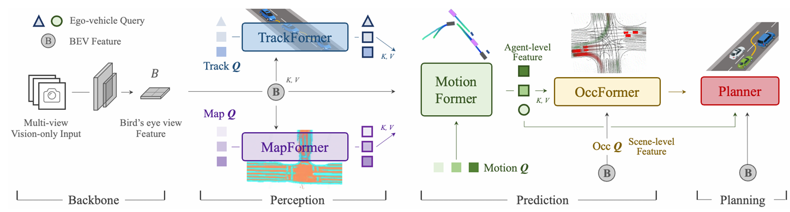

UniAD论文Planning-oriented Autonomous Driving
原始链接
Planning-oriented Autonomous Driving
过往的传统架构
完全模块化： 感知、预测、规划完全解耦，误差累积，信息有损传递 完全黑盒端到端： 不可解释（那怎么解决这个问题呢？）
UniAD的架构
graph TD
A["摄像头图像 Images"] --> B("Backbone & BEVFormer")
B -- 生成 --> C["BEV 特征图 (Key/Value)"]
D["预设的 Object Queries"] --> E("检测与跟踪 TrackFormer")
C --> E
E -- "产出 Track Queries" --> F("预测 MotionFormer")
C --> F
F -- "产出 Motion Queries" --> G("规划 PlanningFormer")
C --> G
H["导航指令 Command"] --> G
G -- 输出 --> I["自车轨迹 (红线)"]
 数据流动：
$$\text{Video} \rightarrow \text{BEV} \rightarrow \text{Track Queries} \rightarrow \text{Motion Queries} \rightarrow \text{Planning}$$
包含4个基于 Transformer decoder的感知和预测模块，以及一个planner。
先使用现成的BEVFormer将video图像转化为BEV特征。（这在UniAD中并不重要）
接下来是TrackFormer和MapFormer
TrackFormer
用一个神经网络替代了后处理，不再需要做匈牙利匹配和IOU，或者匹配的计数器。
Agent Queries ($Q_{agent}$)： 这代表了“车”或“行人”。假设场景里有 $N$ 个交通参与者，每个参与者用一个向量表示。
在每个时间步，初始化一个detection queries，探测新生的agent。 使用track queries 对之前建模出来的agent进行modeling。
这两种queries都是从BEV Feature去查询的。
在自车判断时，使用自注意力，
$$\text{Interaction} = \text{Softmax}(Q_{agent} \cdot Q_{agent}^T) \cdot Q_{agent}$$ ，K，V都是Qagent，这样实际上就是在算路上的所有agent之间的交互，而不是和bev特征的交互。
1 | |
MapFormer
与TrackFormer类似，只不过TrackFormer是交通参与者，而mapformer是静态信息。
K (Key) 和 V (Value)：在 MapFormer 中，依然是同一份 BEV Feature。这意味着无论是找车还是找路，系统查阅的“底层数据库”是完全一样的。
Q (Query)：意图变了。正如您所说，它的物理含义从“一个物体”变成了“一组点（线条）”。
MotionFormer
输入：
-
Track Queries (来自 TrackFormer): 知道了“那是谁，在哪，长啥样”。
-
Map Queries (来自 MapFormer): 知道了“路在哪，车道线怎么弯”。
-
BEV Features: 兜底的环境纹理信息。
仍然还是利用注意力机制 $Q_A$ (Dynamic Agents): 就是我们在 TrackFormer 讲的 Track Queries（车、人）。 $Q_M$ (Static Map): 就是我们在 MapFormer 讲的 Map Queries（路）。 Multimodal (多模态): 这就是我们之前说的，针对每一辆车，预测 Top-K 条轨迹（比如 K=6，分别代表直行、左转、右转、加速、减速等）。
输出：
$\{ \hat{x}_{i,k} \in \mathbb{R}^{T \times 2} | i = 1,…,N_a; k = 1, . . ., K \}$
$N_a$ (i): Agent 的数量（比如 50 个障碍物）。 $K$ (k): 模态的数量（比如每个障碍物预测 6 条轨迹）。 $T$: 预测时长（比如未来 3 秒，每 0.5 秒一个点，T=6）。
使用查询向量Q来
特征提取与构建
-
Backbone (主干网络): 图像首先经过类似 ResNet 的网络，提取 2D 图像特征。
-
BEVFormer: 这是最关键的一步。它通过 View Transformation（视角转换） 将 2D 图像特征“提升”到 3D 的 BEV（鸟瞰图） 空间。
-
它使用 Attention 机制，查询 BEV 网格中的每一个点对应图像中的哪些像素。
-
输出 ($C$): BEV Features。这是一个高维的特征网格（比如 $200 \times 200$ 的网格），它就像上帝视角的地图，包含了车道线、路沿等静态信息，也隐含了障碍物的位置信息。
BEV Feature与 Cost Map的区别
Rule-based Cost Map (标量图): 形式: 通常是一个二维矩阵（$H \times W$）。 内容: 每一个格子（Grid）里只有一个数字（Scalar），代表“经过这里的代价”。 BEV Feature (高维张量): 形式: 是一个三维张量（$H \times W \times C$），其中 $C$ 是通道数（Channel），通常是 256 或更多。 内容: 每一个格子对应的不再是一个数字，而是一串长长的向量（比如 256 个浮点数）。 特点: 包含高维语义信息。 这串数字里隐含了“这是一条虚线”、“这是湿滑路面”、“这是半个车头”等丰富信息，甚至是人类语言难以描述的特征。 优点: 它是可导的。如果最终轨迹与人类驾驶员的轨迹（Ground Truth）不一致，Gradient（梯度）可以直接通过 BEV Feature 反向传播回去，自动修正 Backbone 提取特征的方式。
检测与跟踪 (TrackFormer)
Object Queries
Object Queries 是一组固定数量的可学习参数（Learnable Parameters）。
假设我们在模型中预设了 $N$ 个查询（例如 $N=900$），每个查询向量的维度为 $d$（例如 $d=256$）。那么，Object Queries 初始化为一个矩阵 $Q_{obj} \in \mathbb{R}^{N \times d}$。
A. 位置部分 (Positional Embedding) —— “在哪里看” 这是 Query 的“锚点”属性。经过训练，这 900 个 Query 会学习到不同的空间偏好。
Query #1 可能专注于 BEV 空间的左上角。 Query #2 可能专注于十字路口的中心。 学术解释： 它是对场景进行稀疏采样的空间先验（Spatial Prior）。它告诉网络去关注哪些区域可能出现物体。
B. 内容部分 (Content Embedding) —— “看到了什么” 这是 Query 的“容器”属性。在未经解码器处理前，它通常初始化为零或随机值。 随着它在 Transformer Decoder 层级中流动（Layer by Layer），它不断地通过 Cross-Attention 从 BEV 特征中“吸取”信息。 最终，这个向量将编码目标物体的类别（Class）和回归参数（Bounding Box / Velocity）。